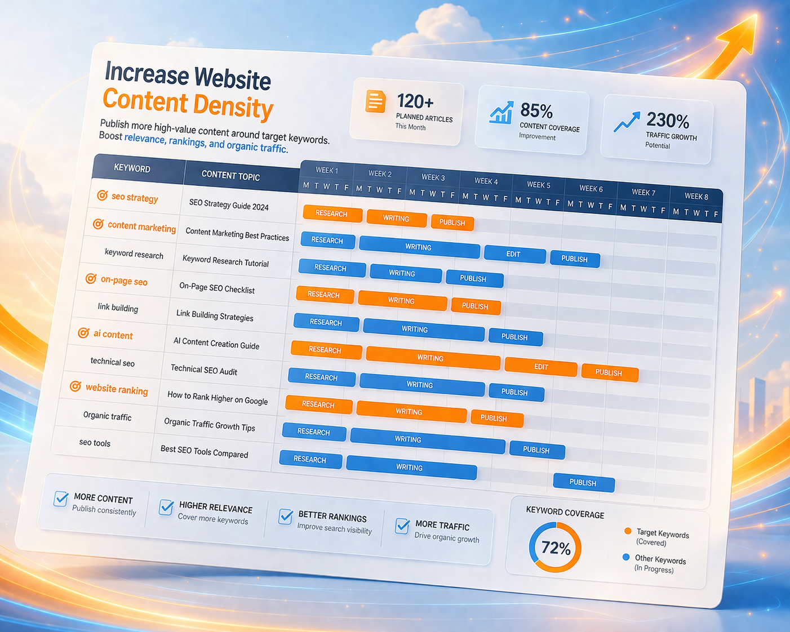
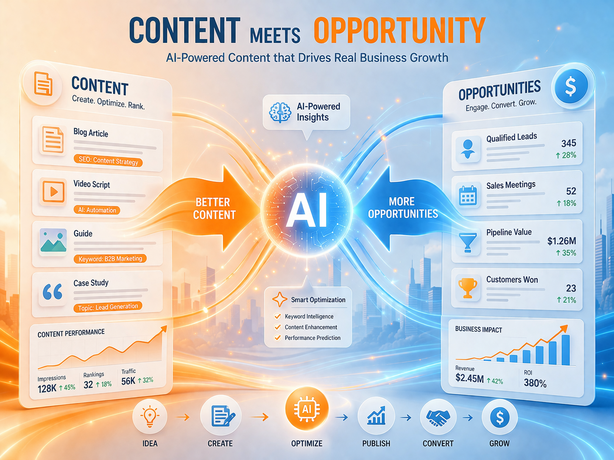

Why Aplus
不只是 AI 寫文章，而是一套完整的 SEO 獲客系統
很多企業網站上線後，內容更新慢、搜尋流量低，也難以持續帶來詢問。 Aplus 不是單純的產文工具，而是從關鍵字策略、內容生成到發佈與成效追蹤， 協助企業建立真正可持續運作的內容引擎。

Core Benefits
讓網站從靜態門面，變成持續運作的成長引擎
關鍵字策略更有方向
不再只是想到什麼寫什麼，而是根據搜尋意圖與商業需求建立內容規劃。
持續累積搜尋內容資產
每一篇文章都是新的流量入口，讓網站內容越來越完整，而不是停留在幾個固定頁面。
降低內容產出成本
從主題發想、文章生成到內容整理，大幅減少企業在內容營運上的時間與人力負擔。
把流量導向詢問與名單
不只是增加曝光，更重視表單、聯絡與潛在客戶的轉換設計。
How It Works
系統運作流程
從內容策略到成效追蹤，建立一套可以持續運作的 SEO 獲客流程。
01｜定義產業與主題方向
根據你的服務、產品與目標客群，整理出適合佈局的主題與關鍵字方向。
02｜生成 SEO 題目與文章
透過 AI 快速產出具備搜尋價值的文章內容，提升更新效率與內容密度。
03｜發佈到網站並持續累積
文章上架後會成為新的搜尋入口，讓網站內容持續擴張，不再只是單頁展示。
04｜追蹤流量與名單成效
從文章表現、流量入口到聯絡與詢問，逐步了解哪些內容真正帶來商機。
Feature Modules
核心功能模組
這不是單點工具，而是一套協助企業網站持續成長的內容獲客系統。
Who It’s For
適合這些想透過網站持續成長的品牌
B2B 服務型企業
透過專業文章建立信任感，讓潛在客戶在搜尋時更容易找到你。
中小企業品牌官網
網站不再只是名片頁，而是能持續累積流量與詢問的商業資產。
顧問、教育與知識型服務
把專業內容轉成可搜尋文章，長期累積曝光與潛在客戶。
想降低廣告依賴的品牌
透過 SEO 內容逐步建立自然流量，減少只能靠投廣告帶客的壓力。
SEO Content Strategy
讓文章成為你的長期流量入口
當網站可以持續新增高相關內容，就更有機會被搜尋引擎理解、收錄與排序。 這也是企業網站從展示型官網，轉向獲客型網站的關鍵。
內容主題持續擴張
根據不同產品、服務與產業問題，擴展更多可被搜尋的文章入口。

網站內容密度提高
比起只有幾個靜態頁面，文章專欄更能幫助網站累積搜尋能見度。

內容與商機連動
將文章導向表單、聯絡或預約展示，讓 SEO 不只是流量，而是轉換。
Results
你真正想建立的，不只是網站，而是流量系統
當企業網站可以持續生成內容、累積搜尋入口並帶來詢問， 它就不再只是靜態門面，而是能夠長期創造商業價值的資產。
增加自然流量入口
讓更多人透過搜尋找到你的品牌、服務與內容。
提升網站被發現的機會
網站內容越完整，就越容易覆蓋更多搜尋需求與問題。
建立長期內容資產
每篇文章都可能在未來持續帶來曝光與訪客，而不是一次性內容。
把流量導向實際商機
最終目標不是文章數量，而是穩定產生詢問、聯絡與名單。